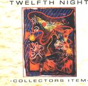

| Artist: | Twelfth Night |
| Title: | Collectors Item |
| Label: | Cyclops CYCL 102 |
| Length(s): | 77 minutes |
| Year(s) of release: | 1990/2001 |
| Month of review: | [12/2001] |
| 1) | The Ceiling Speaks | 6.35 |
| 2) | Deep In The Heartland | 3.50 |
| 3) | We Are Sane | 10.19 |
| 4) | Art And Illusions | 3.44 |
| 5) | First New Day | 5.51 |
| 6) | Take A Look | 11.29 |
| 7) | Last Song | 4.23 |
| 8) | Blondon Fair | 6.02 |
| 9) | The Collector | 19.01 |
| 10) | Love Song | 5.32 |
The second track is more interesting than good. Compared to the other epic tracks it lacks a bit in the melody section. But then again, this is embyronic phase for the track that later transformed into Not On The Map and even later into Blondon Fair, where it is unrecognizable, I can tell you. The song is a rough one, where the pieces do not yet fit well together. Because the song was never before released on any official album, it is still a worthwhile addition for the fan. A rather heavy track, but maybe it ought to have been placed more in the middle, where it does not do as much "harm".
We Are Sane was the original starter of Collectors Item and a glorious epic with plenty of critical lyrics. It also shows that Twelfht Night is not only a prog band, but alos has hardrock written all over it. Both of these labels sell the band short however (you might have gathered by now that I am quite the avid TN fan). The music alone would not do (but you migfht want to listen to the fully instrumental Live At The Target to hear THAT version of the band). Especially the combination of the varied (neo-)progressive rock with harder edges (for that time mind you), the lyrics full of engagement and criticism on our wonderful society, and adding a bit of wackiness in the form of Geoff Mann's vocals and assorted noises make this band unique among those that came up in the eighties.
After all this melodic heavyhandedness we come to the easy rock of Art And Illusion. We have come now to the Andy Sears period (one might compare this to what happened with IQ, although I have reason to believe the circumstances were otherwise). Andy is much less weird, but not really less critical of society (see Take A Look). Andy's voice is a bit different from Geoff's and he is also more serious. Musically, the fact that the band signed with Food For Thought a sublabel of Roadrunner ought to say enough. This does not mean that the band went overnight to commercial stuff, but the music does become less epic and more accessible. I once read somewhere that Twelfth Night were to be follow-ups to Duran Duran. In view of the pictures in the booklet, this is not even unlikely.
First New Day is an accessible track with keyboards and drum machine. In fact, everybody (safe Brian Devoil) plays keyboards and Andy Sears sings. This is very much a ballad and can be compared in atmosphere to Love Song, the final track on this album.
The more accessible nature of TN with Andy Sears did not mean the loss of the epic, because Take A Look is such a one. Sounding a bit more "modern" in the use of keyboards. Some of the melodies have something of the Middle East about them, and it is one of the tracks with quite a bit of percussion. Especially the vocal parts are extremely varied on this alternatingly sinister and poppy track. At times, Sears screams out his panic at the top of his voice, at times he sings his lines in melodic fashion. In the final part of the track everything comes together in an orgasm of sound and vocals.
The next two tracks are also sung by Andy Sears. Last Song is the first of these is the third track new to the compilation. Like Art And Illusion a rather short and catchy track, but it has to be said, the vocal melodies are very strong. A pumping, accessible track with a typical eighties sound. The final Sears track is the vocally inaccessible Blondon Fair. Lots of cold sounding percussion, vocal effects, but if you give it time, the song will grow on you as it did on me. The song is not only effect and keyboards, but also features a rather long solo on guitar, after which the song turns for the chaotic. Compared to recent prog, it does strike me that the keyboard sound on many of these track is quite cold.
The Collector continues to be for me, the hallmark of Twelfth Night. There is so much about this track that is good, that it is hard for me to describe. From the bombastic opening, followed by pounding drums and high pitched guitar, Geoff Mann crawls into the skin of someone whose life is filled with collecting (hmm, that does sound familiar). The 19 minutes that this track takes up fly by while you enjoy all word games that Mann plays in between bringing over his main message: better to work on your soul than on collecting material goods. This summary does however fail to convey the extent of the message, so read it yourself. My favourite line then, "The trouble with life in ivory towers, the seconds stretch until they fit the skins of hours". All in all the band combines all the best of Twelfth Night: easy going acoustic guitar, a very strong bass presence often used to replace the guitar, but also the sharp and typical guitar of Andy Revell.
And do not forget, that Collectors Item is the only album on which this track is featured, having been recorded for it especially.
The final track of the album is Love Song. Some say that this is the Twelfth Night anthem. It is one of the few ballads the band made to offset in this case the negativity of the Fact And Fiction album. Full of forgiving, optimism and emotion it is a worthy closer to this album.